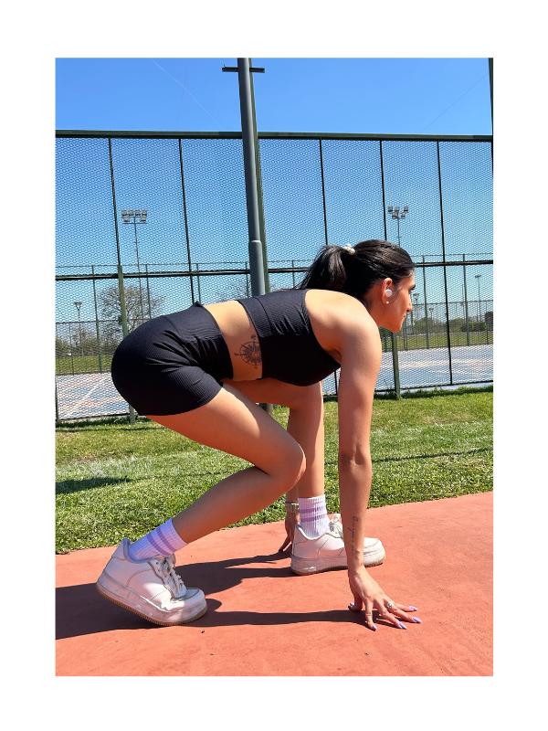

NABÍ (se pronuncia na-bí) significa mariposa en coreano. Como la mariposa, NABI es símbolo de transformación, libertad y evolución. Cada etapa de nuestra vida nos moldea, nos desafía y nos invita a crecer, y NABI nace desde esa transformación personal: la mía. Después de pasar por momentos difíciles de ansiedad y trastornos de la conducta alimentaria, encontré en la acrobacia aérea un espacio para reconectarme conmigo misma, con mi cuerpo y con mi fuerza interior. Esa pasión por el movimiento me acompañó en mis altibajos y me enseñó que la verdadera transformación no es perfecta ni lineal, sino real, humana y llena de aprendizajes. Mis ganas de emprender surgen desde ese mismo lugar: desde la necesidad de demostrarme que puedo hacer algo por mí misma. Crecí con baja autoestima, y NABI se convirtió en mi forma de empoderarme y demostrarme que puedo crear, liderar y sostener un proyecto propio. Cada prenda, cada diseño, es un reflejo de esa fuerza y de mi deseo de inspirar a otras mujeres a moverse y sentirse bien consigo mismas, sin la presión de ser perfectas.

NABI no quiere ser representada por cuerpos que buscan la perfección. No pretende que tengas energía todo el tiempo, ni que sonrías cuando no te nace, ni que tu autoestima dependa de “polvos milagrosos” o tratamientos que prometen solucionarlo todo. La presión constante de tener que sentirte bien y amarte a cada momento puede ser agotadora. Aquí, entendemos que hay días con ganas y días sin ganas, días de avanzar y días de simplemente respirar. Esta marca es para quienes quieren moverse, entrenar y vestirse con estilo sin la obligación de cumplir con estándares irreales. Para quienes entienden que el empoderamiento real no es fingir, sino aceptar tu humanidad y acompañarte en tu propio ritmo. NABI celebra la autenticidad, la fuerza, la vulnerabilidad y la transformación personal, porque sabemos que ser poderosa no significa estar siempre impecable, sino ser fiel a vos misma en cada etapa de tu vida..